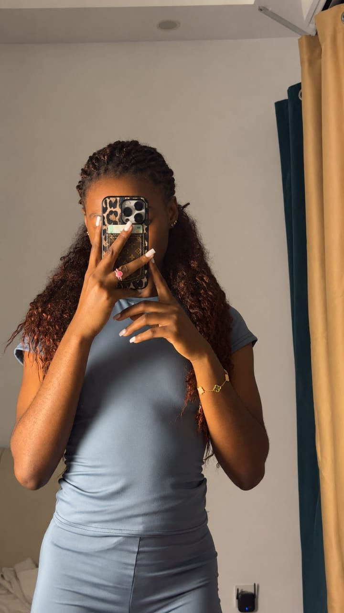
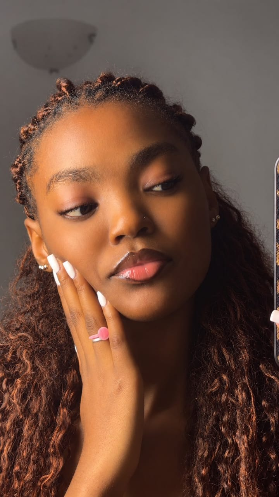

Quelques Fragments
Chaque pas dans cette galerie dévoile un pan de lumière. Prends le temps de regarder, de contempler, et de laisser défiler les souvenirs...
Le Cabinet des Reflets
Ici, la lumière ne fait qu'un avec le miroir. Cette salle rassemble les instants où l'élégance se révèle sans effort, dans le naturel d'un geste ou d'un reflet.
Fais défiler pour découvrir ↓
Cliquer pour agrandirL'Élégance du Miroir
Quand le quotidien devient une œuvre d'art.

Cliquer pour agrandirL'Éclat d'un Regard
La délicatesse d'un profil et l'éclat d'un charme intemporel.
.jpeg) Cliquer pour agrandir
Cliquer pour agrandir
Bleu & Pois
L'assurance incarnée.
.jpeg) Cliquer pour agrandir
Cliquer pour agrandir
Reflet Secret
Ce que le miroir garde pour lui.
.jpeg) Cliquer pour agrandir
Cliquer pour agrandir
Noir & Lumière
Sans couleur, rien n'a perdu son éclat.
Fin de la Salle I
Le Boudoir des Portraits
Un espace plus intime, presque secret. Chaque portrait ici capture une nuance de douceur, un éclat retenu, une présence qui se dévoile lentement.
Fais défiler pour découvrir ↓.jpeg) Cliquer pour agrandir
Cliquer pour agrandir
Lumière Dorée
Les papillons sur ta peau racontent déjà une histoire.
.jpeg) Cliquer pour agrandir
Cliquer pour agrandir
Intense & Doux
Un regard qui ne laisse personne indifférent.
 Cliquer pour agrandir
Cliquer pour agrandir
Soleil d'Orange
Une énergie pure.
.jpeg) Cliquer pour agrandir
Cliquer pour agrandir
Instant Volé
La grâce se cache dans les détails.
.jpeg) Cliquer pour agrandir
Cliquer pour agrandir
Douce Lumière
Une présence qui adoucit tout autour d'elle.
Fin de la Salle II
La Galerie du Mouvement
Le mouvement raconte ce que l'image figée ne peut dire. Cette galerie vit, respire, avance — comme les instants qu'elle contient.
Fais défiler pour découvrir ↓Mouvement Originel
La première étincelle.
Blonde & Libre
L'énergie pure en mouvement.
Sur la Route
Un instant de cinéma.
Pleine Lumière
Le mouvement qui capte tous les regards.
Sans Filtre
Le naturel, tout simplement.
L'Instant Présent
Ce qui ne se fige pas.
Fin de la Salle III
Le Salon des Éclats
Ici se mêlent toutes les facettes d'une même personnalité : la force, la douceur, l'espièglerie. Un salon où tout se mêle, juste avant la toute dernière galerie.
Fais défiler pour découvrir ↓
Cliquer pour agrandir
Force Douce
La contradiction la plus belle.
.jpeg) Cliquer pour agrandir
Cliquer pour agrandir
Espièglerie
Le sourire qui désarme.
 Cliquer pour agrandir
Cliquer pour agrandir
Silence Eloquent
Parfois le plus beau tableau n'a pas besoin de cadre.
 Cliquer pour agrandir
Cliquer pour agrandir
Mosaïque
Quatre facettes, une seule personne.
Éclat Vivant
Quand l'image se met en mouvement.
Noir & Blanc
Quand la couleur s'efface, il reste l'essentiel.
Fin de la Salle IV
La Galerie des Instants
La toute dernière salle de la visite. Des instants en mouvement, comme des souvenirs qui refusent de s'éteindre. Après elle, il ne restera plus que les mots.
Fais défiler pour découvrir ↓Premier Souffle
Là où tout commence à bouger.
Rayonnement
Une énergie qui se passe de mots.
Le Sourire Complice
Celui qui dit : « je sais ce que je fais ».
Dernier Mouvement
Pour clore la visite en beauté.
Fin de la Salle V